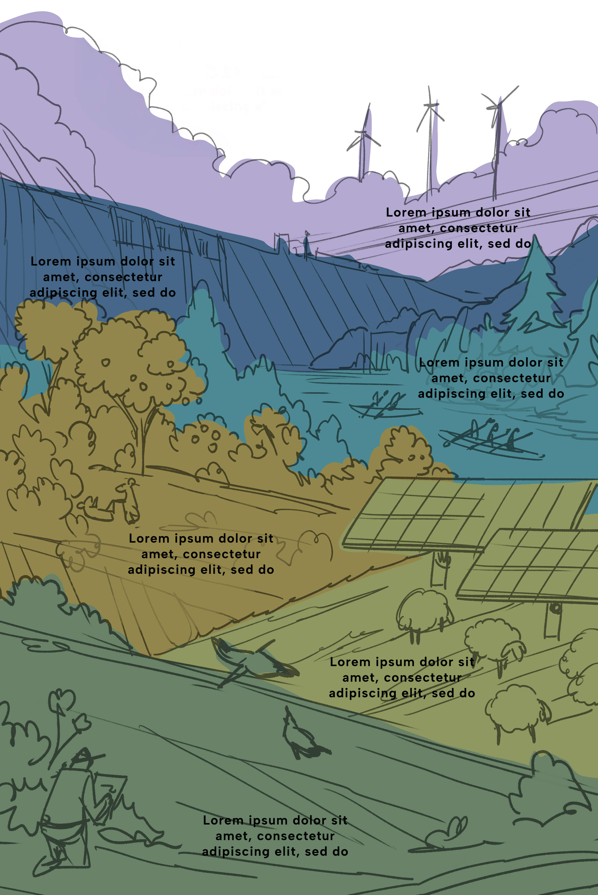

En colaboración con Endesa
Conexión a Tierra
Historias donde las renovables transforman el territorio
Explorar historias

El regreso del oso pardo
Ver capítulo
Repotenciación en Aldeavieja
Ver capítulo
Proyecto Endesabats
Disponible el 02/10
Coordinación: Silvia Resola | Diseño y maquetación: Alejandra Santander | Ilustración: Alex Batlle | Vídeo: Endesa | Fotografía: Getty Images. Un proyecto de Brandslab. Godó Nexus